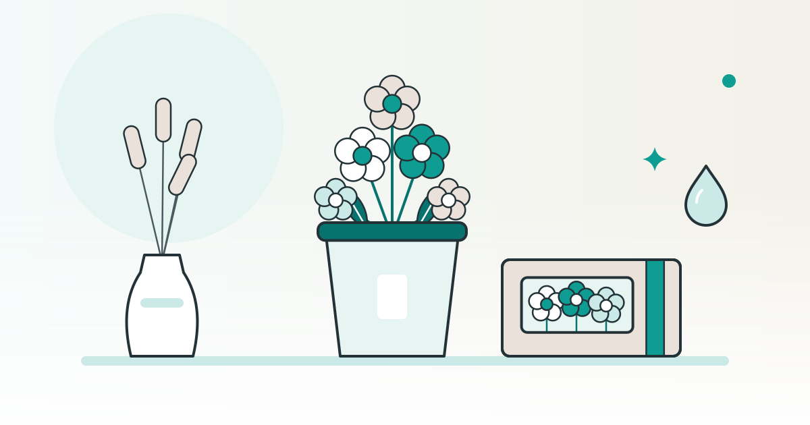

SHOPKIT コラム
花・ドライフラワーのネットショップを始めるには鮮度・梱包・配送

花やドライフラワーをネットで販売したいときは、商品を載せる前に、届ける状態と受け取りの流れを確かめましょう。花材ごとの管理方法を確認し、実際に包んで届いた状態を見てから、商品説明と配送の案内をそろえる進め方を紹介します。
この記事は、完成品のネットショップを販売している SHOPKIT が書いています。
生花とドライフラワーでは、届け方も扱い方も違う
どちらも同じ送り方にせず、販売する花材ごとに確認欄を作ります。生花は出荷前の状態と受け取りまでの管理を、乾燥させた花材は形を守る包み方や保存の案内を、記録の柱にしてみましょう。
まず、仕入れ先に管理方法と発送に向く状態を尋ねます。生花か乾燥した花材かだけで条件を決めず、品種や加工の有無、組み合わせる器や装飾も含めて確認します。
| 販売する物 | 先に尋ねること | 店で確かめて残すこと |
|---|---|---|
| 生花 | 花材ごとの管理方法、保水の方法、出荷に使う状態 | 入荷・出荷前・試しに送った後の状態と、その間の扱い |
| ドライフラワー | 乾燥や加工の状態、接触や湿気などについての取扱いの案内 | 箱の中の固定、開けたときの形、花材が落ちた箇所 |
| 器や装飾との組み合わせ | 含まれる物、外して包める部分、組み直す方法 | 花材と器の接触、箱を開ける順、受け取る人への説明 |
花材だけを売るのか、器や飾りを含む商品なのかも、写真と文章でそろえます。雑貨を合わせる場合の表示や安全の確認は、雑貨の記事も入口になります。
関連：雑貨屋のネットショップを開くには｜品ぞろえと商品の表示・安全の確かめ方
生花は、届く日と受け取りの都合を先に決める
お客様の希望と、店が手配できる日程を分けて確かめます。用途に合わせて希望する日と、受け取れる日を聞き、仕入れから発送までの計画と照らしましょう。
発送する日、届け先、配送で受け付けてもらえる条件を確かめてから案内を作ります。温度の管理が必要かどうかや、使える送り方は、花材の管理方法と配送の引受条件を合わせて確認します。
店が発送する予定と、お客様の到着希望は別の欄で残します。手配を確認できていない日を、確定した到着日として載せないようにしましょう。地域や時期で確認した条件が違う場合も、その根拠を残します。
受け取れなくなったときにどこへ連絡してもらうか、変更の相談をいつまで受けるかは、仕入れや発送の段階に合わせて決めます。注文の前に読める場所へ案内を置き、実際に対応できる条件とそろえましょう。
消費者庁の通信販売の案内は、広告に示す項目として、送料や引き渡しの時期、返品に関する条件などを挙げています。一定の条件で表示の一部を省ける場合の説明もあります。
生花かどうかだけで返品の可否を決めず、店に載せる条件と通信販売の決まりを照らし、個別の扱いは窓口で確かめます。返品の表示を考えるときは、関連する記事で確認項目を整理してください。
関連：ネットショップの返品の決まり｜通信販売にクーリング・オフは無い？返品特約の書き方
傷みにくい梱包と、届いたときの手入れの案内
花材を入れた箱で試し、取り出すところまで確認しましょう。箱だけを選んで終えず、花の形と大きさ、保水に使う物や器があるかを確かめて包み方を決めます。
花材の固定する位置、包みをほどく順番、器と花を分ける必要があるかを記録します。保水材や容器を使う場合は、仕入れ先の説明も確認し、閉じた箱の中でどう収めたかを写真に残しましょう。
試しに送る前後では、花材の状態、箱の向き、固定した箇所、開封後の見え方を同じ項目で見ます。気になる変化があれば、送り方と包み方を見直し、どの条件で確かめたかを記録します。
同封する案内には、開ける順番と、花材ごとに確かめた手入れの方法、困ったときの連絡先を載せます。生花用の説明を乾燥した花材へそのまま使わず、商品の資料と照らして分けましょう。
日持ちや状態を保つ日数を想像で書かず、確認できた管理方法を伝えます。梱包後の大きさや費用を整理する作業は、送料の記事も参照できます。
関連：ネットショップの送料の決め方｜発送方法・梱包と先に伝えること
海外から花材を仕入れるときは、植物の検査を確かめる
注文する前に、植物名と仕入れる国、使う部位や加工の状態をそろえて確認します。花や枝などの呼び名だけで輸入できると決めず、何をどの状態で取り寄せるかを説明できるようにしましょう。
植物防疫所の事業者向けの案内は、植物の種類や部位に応じた輸入の規制や検査を説明し、条件を調べるための入口を紹介しています。同じ案内では、検疫の対象となる植物類には、商用の大量貨物に加え、少量の見本も含まれるとしています。
乾燥・加工という説明だけで、検査の扱いを決めないようにします。花材の名前、部位、産地や発送元、処理の内容が分かる資料を用意し、必要な検査や書類を植物防疫所へ確かめます。
仕入れ先の回答と、窓口で確認した条件は分けて残しましょう。対象を特定できない花材は、写真や説明を追加して確認し、仕入れの可否を想像で埋めないようにします。
この段階で得た回答は、確認した花材と状態に結び付けて保存します。別の品種や加工の花材へ広げるときは、同じ条件として扱わずに照らし直しましょう。
写真と実物の違いを、どう伝えるか
写真の商品をそのまま届けるのか、組み合わせの見本なのかを明記します。見本を載せる場合は、花材の種類、色の範囲、大きさなど、何をそろえて販売するのかを確認して書きましょう。
色や形の違いを説明する場合も、実際に扱う花材で確かめた範囲にとどめます。使える花材が変わったら、以前の写真と同じ内容を届けられるかを見直し、販売ページの説明とそろえます。
消費者庁の表示に関するガイドライン一覧には、インターネットでの商品表示を扱う資料へのリンクがあります。
写真を整えるときも、品ぞろえにない花材や含まれない器を、届く内容として見せないようにします。「見本」と添えるだけで済ませず、届く内容と写真の関係を読み返しましょう。
仕入れた花材、商品写真、掲載した説明の日付を結びます。商品を替えるときに、写真だけが古いまま残っていないかを確認するための記録にします。
季節で変わる品ぞろえと、売り切れの表示
仕入れられる内容と、店で注文を受ける範囲をそろえましょう。花材ごとに仕入れの確認先と確認日、販売する期間、受けられる内容を整理します。
季節の花材や行事に合わせた商品を考える場合は、仕入れ先に用意できる内容と時期を尋ね、受け取りの日程と一緒に見ます。販売期間を決めるときも、用意できる物を確認してから案内します。
売り切れや受付終了にしたら、店で注文を受ける状態と、写真や説明の表示が合っているかを確かめます。別の花材への変更を考える場合は、前の商品と同じ物として案内せず、写真・内容・配送条件を見直しましょう。
最初に扱う物を絞るときは、花材を手配できるか、包んで届ける方法を確かめたか、手入れを説明できるかを並べます。ジャンル全体を選ぶ考え方は、別の記事も入口になります。
関連：ネットショップで何を売る？ペット用品から考えるジャンルの選び方
よくある質問
生花とドライフラワーは、同じ箱や説明で送れますか？
花材ごとの管理方法と、器などを含む商品の内容を確かめてから決めます。実際に包んで送った状態と、開ける順番や手入れの案内を照らしましょう。
花を受け取る希望日は、そのまま到着日として案内してよいですか？
希望日と、店が手配を確認した日程を分けます。仕入れ・発送の計画と配送の引受条件を照らし、確認できていない日を確定した到着日として載せないようにします。
乾燥した海外の花材なら、植物の検査を確かめなくてもよいですか？
乾燥や加工という説明だけで扱いを決めません。植物名や部位、仕入れる国、加工の内容をそろえ、必要な検査や書類を植物防疫所へ確かめます。
見本の花の写真を使う場合、何を説明しますか？
写真が見本であることと、実際に届ける花材や色の範囲、大きさ、含まれる物をそろえて説明します。用意する内容が変わるときは、写真と案内を照らし直しましょう。
※ 公的資料は、2026年10月26日と27日に取得した内容を確認しています。輸入や表示の扱いは、最新の公的な案内と対象商品の条件を照らして確かめてください。